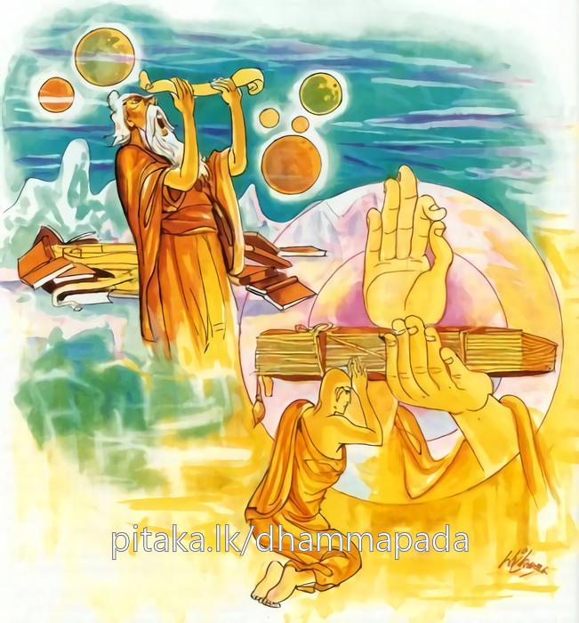
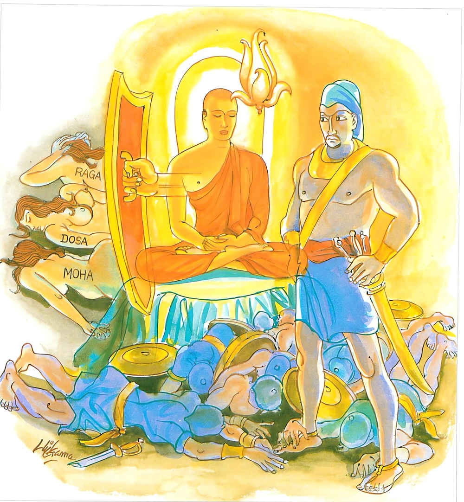

8-3 තුන්වන කුණ්ඩලකේසී ස්ථවිර වස්තුවයි.
මෙම කතාව සද්ධර්ම සාගරයෙන් ද කියවන්න.
යො චෙ ගාථාසතං භාසෙ අනත්ථපදසංහිතං
එකං ධම්මපදං සෙය්යො යං සුත්වා උපසම්මති.
යමෙක් ඉදින් අනර්ත්ථපදයෙන් යුක්ත වූ ගාථා සීයක් කීයේ නමුදු ඔහු උතුම් නොවෙති. යමක් අසා පුගුල් තෙම කෙලෙස් සංහිඳීමෙන් සන්හිඳේ ද, එසේ වූ එක් ධර්මපදය ම උතුමි.

යො සහස්සං සහස්සෙන සඞ්ගාමෙ මානුසෙ ජිනෙ
එකඤ්ච ජෙය්ය අත්තානං ස වෙ සඞ්ගාමජුත්තමො.
යමෙක් දහසෙකින් ගණන ලද දහසක් මිනිසුන් (දශලක්ෂයක් මිනිසුන්) එක ම යුද්ධයෙහි දිනුයේ නමුදු (උත්තම යෝධ නම් නො වේ.) වැලි යමෙක් එක ම තමා කෙලෙස් දිනීමෙන් දිනුයේ ද, හේ ඒකාන්තයෙන් යුද්ධයෙහි දිනුවවුන්හට උත්තම යෝධ නම් වේ.

යො ච ගාථාසතං භාසෙ ආදි මේ ධර්මදේශනාව බුදුරදුන් දෙව්රම වාසයකරන කාලයේ කුණ්ඩලකේශී අරභයා දේශනා කරනලදි.
රජගහනුවර සොළොස් හැවිරිදි පමණවූ දුටුවන් පහදවන ප්රසාදජනක අභිරූපීවූ එක් සිටුදියණියක් සිටියාය. ඒ වයසෙහිම සිටි ස්ත්රීහු පුරුෂයන් පිළිබඳ වූ සිතින් ඇය කෙරෙහි ලොල්ව සිටියාහුය. ඉන්පසු ඒ සිටුදුවණියගේ මවුපියෝ සත්මහල් පහයක උඩම ඇති මහලේ සිරියහන් ගබඩාවක දුවණිය වාසය කරවාලූහ. එකම එක දාසියක් ඇගේ ඇපඋපස්ථානය සඳහා යෙදවූහ.
එක් සොරකම් කළ තරුණයෙක් අල්වාගෙන දෙඅත් පිටුපසට තබා බැඳගෙන කස සතරකින් තළතළා වධකාගාරයට ගෙන ගියාහ. ඒ සිටුදුව මහාජනයාගේ කෝලාහලය අසා මෙ කිමෙක්දැයි විමසා ප්රාසාදතලයෙහි සිට බලන්නී ඔහු දැක ඔහු හා පිළිබඳ සිත් ඇතිකරගෙන ඔහු ප්රාර්ථනා කරමින් ආහාර නොගෙන ඇඳෙහි වැදහෙවී සිටියාය. ඉන්පසු මව්පියෝ, දුව මේ කුමක්දැයි ඇසූහ. ඉදින් මේ සොරෙකියි ගෙන යන පුරුෂයා ලදොත් ජීවත්වෙමි. ඔහු නොලැබුණොත් මගේ ජීවිතයක් නැත. මැරෙන්නෙමියි කීවාය. දුව එසේ නොකරන්න. අපේ ජාති ගෝත්ර වත්කම් ආදියට සැසඳෙන අනිත් සැමියෙක් ලබා දෙන්නෙමුයයි කීවාහුය.
මට වෙන එකෙකුගෙන් වැඩක් නැත. මොහු නොලැබුණොත් මැරෙන්නෙමියි කීවාය. දුව සනසාගත නොහැකිව සිටුවරයාට දන්වනලදි. ඔහුද ඈ සනසාගත නොහැකිව කුමක් කළහැකිදැයි සිතා ඒ සොරා ගෙන යන රජයේ නිලධාරීන්ට මිල දහසක් යැවීය. මේ මිල රැගෙන මේ සොරා මා වෙත එවව්. හෙතෙම යහපතැයි කහවණු රැගෙන ඔහු මුදා හැර වෙන එකෙක් මරා දේවයන්වහන්ස, සොරු මැරුවෙමියි රජුට දැන්වීය. සිටුවරයා තම දුවණිය ඔහුට පාවා දුන්නේය. ඈ එතැන් පටන් සැමියා සතුටු කරන්නෙමියි සව්බරණින් සැරසී තම අතින්ම කැඳ ආදිය පිළියෙල කළාය. සොරා කීප දිනකින්, කවදා නම් මම මෑ මරා මැගේ ආබරණ ගෙන විකුණා එක් සුරා සැලකට ගොස් කාබී සිටින්ට ලබම්දෝයි සිතුවේය. මෙසේ සිතූ ඔහු එක් උපායක් ඇතැයි සිතා ආහාර ගැනීම ප්රතික්ෂේප කොට ඇඳේ නිදාගත්තේය.
ඉන්පසු සිටුදුව ඔහු වෙත පැමිණ ස්වාමීනි, ඇති අමාරුව කුමක්දැයි ඇසුවාය. සොඳුර, කිසිවක් නැතැයි හේ කීවේය. කිම මගේ මවුපියෝ ඔබ හා අමනාපද? සොඳුර අමනාප නැත. එසේනම් මේ හැටියට ඉන්නේ ඇයි? සොඳුර, එදා මා බැඳගෙන යන අතර චොරප්රපාතයෙහි (සොරුන් මැරීම සඳහා පහතට දමන හෙල) අධිගෘහිත දෙවියන්ට බිල්ලක් (පූජාවක්) දෙන්නෙමියි පොරොන්දුවී ජීවිතය ලදිමි. ඔබත් මට ලැබුණේ ඒ ආනුභාවයෙනි. මම තවමත් ඒ බාරය ඔප්පු නොකෙළෙමි සොඳුරයයි ඔහු කීවේය. ස්වාමීනි, ඒ ගැන නොසිතන්න. බාරය අපි ඔප්පු කරමු. ඒ සඳහා අවශ්ය දේ කියන්න. දියනුමුසු කිරිබත් හා ලදපස්මල් අවශ්යයි. සැමියාණනි, මැනවි. මම ඒවා පිළියෙල කරන්නෙමියි කී ඈ සියලු බාරවස්තු පිළියෙල කොට ස්වාමීනි, එන්න, යමුයයි කීවාය. එසේනම් සොඳුර ඔබේ නෑදෑයන් නවතා ඔබ අගනා වස්ත්රාභරණවලින් සැරසී එන්න. එවිට අපි සිනාසෙමින් සෙල්ලම් කරමින් මනාප ලෙසින් යන්නෙමු. ඈ එසේ කළාය. ඉන්පසු ඈ පර්වත පාමුලට ගියකල්හි සොරා ඈ අමතා සොඳුර, මෙතැන් සිට අපි දෙදෙනා පමණක් යමු. සෙසු ජනයා යානාවත් සමග මෙහි නවත්වා බලිකර්මයට අවශ්ය භාජන ඔබම ගන්න. ඈ එසේ කළාය. සොරා ඈත් සමග චෝරප්රපාත පර්වතයට නැංගේය.
ඒ පර්වතයට මිනිස්සු එක් පැත්තකින් පමණක් නගිති. අනික් පැත්ත ප්රපාතයක් සේ ඇති නිසා පර්වත මුදුනේ සිට, සොරුන් ඒ පැත්තෙන් හෙළා දමති. ඒ වැටෙන හොරු කෑලි කෑලිවලට කැඩී බිමට වැටෙත්. ඒ නිසාම මේ පර්වතය චෝරප්රපාත නමින් හඳුන්වති. සිටුදුව පර්වත මුදුනේ සිට ස්වාමීනි, බලිකර්මය කරන්නැයි කීවාය. හොරා නිහඬ විය. නැවත ඈ ස්වාමීනි, තුෂ්ණීම්භූතව සිටින්නේ ඇයිදැයි ඇසුවාය. ඉන්පසු ඔහු මෙසේ කීවේය.
මට බලිකර්ම කිරීමෙන් වැඩක් නැත. ඔබ මෙහි ගෙන ආවේ රවටාගෙනයයි හෙතෙම කීවේය. ස්වාමීනි, ඒ කුමක් සඳහාද? නුඹ මරා නුඹේ ආභරණ රැගෙන පලායාම සඳහායි. මරණභයට පැමිණි ඈ මෙසේ කීවාය. ස්වාමීනි, මාත් මේ ආභරණත් ඔබ සතුය. ඉතින් මෙසේ කියන්නේ ඇයිද? ඈ එසේ නොකරවයි නැවත නැවතත් ඉල්ලා සිටිනමුත් තී මරන්නෙමි යන්නම ඔහු කීවේය. එය එසේනම් මා මැරීමෙන් ඔබට ප්රයෝජනයක් නැත. මේ ආභරණ රැගෙන මට ජීවිතදානය කරන්න. මෙතැන් පටන් මා ඔබගේ අම්මායයි හෝ දාසියක් වශයෙන් හෝ ඔබට අවශ්ය සේවය කරන්නෙමියි කියා මේ ගාථාවද කීවාය.
මේ අඟු පළඳනා
විදුරුමිණි වළළුද හැම
ගනු මැනවි හිමියනි
මමත් දැස්සක් වන්නෙමි
ඒ ඇසූ සොරා ඔබ කියන ආකාරයට වැඩ කළොත් ඔබ ගොස් මවුපියන්ට දන්වන්නෙහිය. ඔබ මහ හඬින් විලාප තියා හැඬුවත් මරන්නෙමියි කියා මේ ගාථාවද කීවේය.
හැඬුවත් වැළපෙමින්
එයින් කම් නැත බඳුව බඩු රැස
ඔබට දිවියක් නැත
සියලු බඩුරැස අපිම ගන්නෙමු
ඈ මෙසේ සිතුවාය. අහෝ මේ සිදුවන දෙයක ඇති බරපතළකම. නුවණ නම් උයාපිහා කන්නට නෙවෙයි. විචාරයෙන් කටයුතු කිරීමටය. මොහුට කළයුතුදේ දන්නෙමියි සැමියා අමතා, ස්වාමීනි, යම්දවසක ඔබ සොරෙකියි අල්වාගෙන ගෙනාවේද, එදා මම ඔබට හිතවත්ව මවුපියන්ට කීවෙමි, ඔවුහු දහසක් වියදම් කොට ඔබ ගෙනවුත් අපේ ගෙදර නැවැත්වූහ. එදා පටන් මම ඔබට පක්ෂපාතීව සිටියෙමි. අද මට හොඳින් ඔබ දෙස බලා වැඳගන්ට අවසර දෙනුමැනවි.
හෙතෙම යහපත සොඳුර, හොඳින් දැක බලාගෙන වැඳගනුවයි කියා පර්වත කෙළවර හිඳගත්තේය. ඉන්පසු ඈ ඔහු තෙවරක් පැදකුණු කොට සතර තැනක සිට වැඳ ස්වාමීනි මේ ඔබේ අවසාන දැකුමයි. ඔබට මා හෝ මා ඔබට හෝ මින්පසු දැකීමක් නැතැයි කියා ඉදිරි පසිනුත් පිටිපසිනුත් වැළඳගෙන මඳක් නැවතී සිට පර්වතප්රාන්තයෙහි පිටිපසින් සිට එක් අතකින් කඳත් අනිත් අතින් පිටිකරත් ගෙන පර්වතප්රපාතයට තල්ලු කළාය. හෙතෙම පර්වත කුහරයෙහි වැදිවැදි කෑලිකෑලිවී බිම වැටුණේය. චෝර ප්රපාතමුදුනේ අධිගෘහීත දේවතාවා ඒ දෙදෙනාගේම ක්රියා දැක ඒ ස්ත්රියගේ ක්රියාවට සාධුකාර දී මේ ගාථාව කීවේය.
හැම තැනම මිනිසා
නුවණ ඇත්තෙක් නොම වේ
ඒ ඒ තැන විචක්ෂණ
ගැහැණිය ද නුවණැති වෙයි
ඈ මෙසේ සිතුවාය. සොරා ප්රපාතයට හෙළා, මා ගෙදර ගියොත් ඔබේ සැමියා කොහිදැයි අසන්නාහුය. එසේ විට ඔහු මා විසින් මරා දමන ලද්දේයයි කිය යුතුය. ‘අවිනීත එකිය, කහවණු දහසක් ගෙවා ඔහු ගෙන්වාගෙන මේ හැටියට ඔහු මරා දැම්මෙහිය’ ආදි වාග්ප්රහාරවලින් මට හිරිහැර කරන්නාහුය. මගේ ආභරණවලට ආශාවෙන් ඔහු මා මරනු කැමති වූයේයයි කීවත් නොඅදහන්නාහ. මට ගෙයින් කම් නැතැයි ආභරණ සියල්ල එතැනම දමා කැලයට වැදී ඇවිදිමින් ගොස් එක් පරිව්රාජිකා ආශ්රමයකට පැමිණ වැඳ, ස්වාමීනි, ඔබ ළඟ මට පැවිද්ද දෙන්නැයි ඉල්ලා සිටියාය. ඉන්පසු ඔවුහු ඈ පැවිදි කළහ.
ඈ පැවිදිවී, ස්වාමීනි, ඔබවහන්සේලාගේ පැවිද්දේ උතුම් පරමාර්ථ මොනවාදැයි ඇසුවාය. සොඳුර දසකසිණභාවනා කොට ධ්යාන ලබාගත යුතුය. අපට ආවේණික ප්රශ්න වාද හෝ උගත යුතුය. මේ අපගේ පැවිද්දේ උතුම් පරමාර්ථයෝයි. ධ්යාන උපදවා ගැනීමට මට අපහසුය. ආර්යයෙනි, මම වාදදහස ඉගෙන ගන්නෙමියි කීවාය. ඉන්පසු පරිව්රාජිකාවෝ ඈට වාද දහස උගන්වා, ඔබ දැන් ශිල්ප උගත්තෙහිය. දැන් ඔබ දඹදිව ඇවිදිමින් තමන් සමග වාදකරන්ට සමර්ථයෙක් ඇද්දැයි පරීක්ෂා කර බලන්නැයි ඇගේ අතට දඹ අත්තක් දී පිටත් කළහ. සොඳුර යව. ඉදින් කිසියම් ගිහියෙක් ඔබ හා වාද කරන්ට සමර්ථ වුවහොත් ඔහුගේ පාදපරිචාරිකා බවට පත් වෙව. ඉදින් පැවිද්දෙක් නම් ඔහු ළඟ පැවිදිවෙන්නැයි අවවාද දුන්හ.
ඈ ජම්බුපරිව්රාජිකා නමින් ප්රකටව එතැනින් නික්ම දකින දකින අයගෙන් ප්රශ්නකරමින් ඇවිදියි. ඈ සමග වාදකරන්ට සමතෙක් නොවීය. මේ පෙදෙසට ජම්බුපරිව්රාජිකාව එන්නීයයි ඇසූ පමණනින්ම මිනිස්සු පලා ගියහ. ඈ ගමකට හෝ නියම්ගමකට පිඬුපිණිස එනවිට ගම්දොරටුවෙහි වැලිගොඩක් ගසා එහි දඹඅත්ත සිටුවා මා සමග වාද කරනු සමතෙක් ඇත්නම් මේ ජම්බු අත්ත අල්ලනුයයි කියා යන්නීය. එතැනට යාමටවත් කිසිවෙක් සමත් නොවූහ. ඒ දඹඅත්ත වියළීගිය පසු ඈ වෙනත් අත්තක් ගත්තාය. මේ ආකාරයෙන් ඇවිදින ඈ සැවත්නුවරට පැමිණ ගම්දොරටුවේ වැලිගොඩක් ගසා අත්ත එහි පිහිටුවා යටකී පරිදිම කියා පිඬුපිණිස ගියාය. බොහෝ ගැමිදරුවෝ දඹඅත්ත වටා රොක්වූහ.
සැරියුත් තෙරණුවෝ පිඬු පිණිස හැසිරී බත්කිස නිමවා නගරයෙන් නික්මෙන විට, ඒ අත්ත පිරිවරා සිටි ගම්දරුවන් දැක මේ කුමක්දැයි ඇසූහ. දරුවෝ තෙරණුවන්ට එපුවත දන්වා සිටියහ. එසේ නම් දරුවනි, ඔබ අත්ත මැඩපියවයි කීහ. ස්වාමීනි, අපි ඊට භයය දරුවෝ කීහ. මම ප්රශ්න විසඳමි. එය මැඩලවයි තෙරණුවෝ කීහ. දරුවෝ තෙරුන්ගේ වචනයෙන් ඔදවැඩී එය ගළවා පොඩි කරමින් නටා දූවිලි ඇවිස්සූහ. ජම්බුපරිව්රාජිකාව එහි පැමිණ දරුවන්ට බැණ දොඩා, තොප හා මා හා ප්රශ්න විසඳීමක් නැත. ඉතින් කුමක් නිසා මගේ අත්ත මැඩලූවාහුදැයි ඇසුවාය. අපේ ආර්යයන්වහන්සේ අප ලවා එය මැඩලූහයි දරුවෝ කීහ.
පරිව්රාජිකාව, ස්වාමීනි මෙය ගලවාලන ලද්දේ ඔබවහන්සේ විසින්ද? නැගණිය එසේය. එසේ නම් මගේ ප්රශ්නවලට පිළිතුරු දෙන්නෙහිද? එසේය පිළිතුරු දෙන්නෙමි. ඈ සවස්වේලෙහි ප්රශ්න ඇසීම සඳහා තෙරුන් සමීපයට ගියාය. මුළු නගරය කැළඹී ගියේය. පඬිවරුන් දෙදෙනාගේ කතා අසන්නෙමු යයි නුවරවැස්සෝ ඈ සමගම ගොස් තෙරුන් වැඳ එකත්පසක හුන්නාහුය.
පරිව්රාජිකාව, ස්වාමීනි, ප්රශ්න අහන්ටද? නැගණිය අසව. ඈ වාද දහසම ඇසුවාය. ඇසූ ඇසූ ප්රශ්නය තෙරණුවෝ විසඳූහ. ඉන්පසු තෙරණුවෝ ඔබේ ප්රශ්න මෙපමණද? තවත් ඇද්දැයි ඇසූහ. ස්වාමීනි, මෙපමණයි. ඔබ බොහෝ ප්රශ්න ඇසුවෙහිය. මාත් එකක් අහන්ට එය විසඳිය හැකිද? ස්වාමීනි, අසනු මැනවි.
තෙරණුවෝ එක නම් කුමක්දැයි ඇසූහ. ඈ තමා විසින් විසඳිය යුත්තේ කුමක්දැයි නොදැන ස්වාමීනි, ඒ කුමක්දැයි ඇසුවාය. නැගණිය මෙය බුදුන්ගේ ප්රශ්නයකි. ස්වාමීනි, මටත් එය දෙනුමැනවැයි ඉල්ලා සිටියාය. ඉදින් මා වගේ වන්නෙහි නම් දෙන්නෙමි. එසේනම් මා පැවිදි කරනු මැනවි. තෙරණුවෝ භික්ෂුණීන්ට භාරකොට ඈ පැවිදි කරවාලූහ.
ඈ පැවිදි වී උපසම්පදාවත් ලබා කුණ්ඩලකේසී ස්ථවිරි යන නමද ලබා කීප දිනකින්ම පිළිසිඹියාපත් රහත්තෙරණියක වූවාය. ධර්මසභාවෙහි රැස්වූ භික්ෂූන්වහන්සේලා කුණ්ඩලකේසී තෙරණිය බොහෝ බණ ඇසුවාය. එහෙත් ඇගේ පැවිදිකිස මුදුන් පැමිණියේය. එක් සොරකු සමග මහ යුද්ධයක් කොට දිනා මෙහි පැමිණියාහයි කථාවක් ඉපදවූහ.
බුදුරජාණන්වහන්සේ එහි වැඩමවා මා එන විට කිනම් කථාවක් කරමින් සිටියාහුදැයි විමසා, මෙනම් කතාවකිනුයි කීකල්හි, මහණෙනි, මා දෙසූ ධර්මය, ටිකක්ය බොහෝයයි නොමනිව්. අර්ථයක් නැති බොහෝ කථා කිරීම ශ්රේෂ්ඨ නොවේ. අර්ථ සහිත එකම දහම්පදය ඊට වඩා ශ්රේෂ්ඨය. අවශේෂ සොරුන් දිනීමෙන් ජයක් නොලැබේ. ආධ්යාත්මික කෙලෙස් සොරුන් දිනීම සැබෑ ජයග්රහණයයයි වදාරා අනුසන්ධි ගළපා දහම් දෙසමින් මේ ගාථාද වදාළසේක:
සියක් ගාථා කීවත්
අරුතක් නොමැති නම් එහි
වැදගත්කමක් නොපැනේ
යමක් අසා සැනසේ නම්
ඒ දම්පදය වැදගති
මිනිසුන් දහස් ගණනින්
යමෙක් දිනුවත් යුද කොට
තමන් දිනුමයි වැදගත්
එයම උතුම් වේ
එහි ගාථාසතං යනු යම් පුද්ගලයෙක් සිය ගණනින් බොහෝ ගාථා කියන නමුත් යන අර්ථයි. අනත්ථපදසංහිතා යනු ආකාශ වන වර්ණනාදි වශයෙන් අර්ථයක් නැති පදවලින් යුතු ධම්මපදං යනු අර්ථගෙනදෙන ස්කන්ධාදි වශයෙන් අර්ථ සමූහයයි. පරිව්රාජිකාවනි, මේ ධර්මපදයෝ සිව්දෙනෙකි. ඒ කවරහුද? පරිව්රාජිකාවනි, විසමලෝභයක් නැතිවීම ‘අනභිජ්ඣා’ ධර්මපදයකි. අව්යාපාද යනු ධර්මපදයකි. සම්මාසතිය ධර්මපදයකි. සම්මාසමාධි යනු ධර්මපදයකි. මෙසේ කියන මේ සතරෙන් කුමක්වුවද ධම්මපදයකි. එය ශ්රේෂ්ඨයි. යො සහස්සං සහස්සෙන යනු යම් එක් සංග්රාම යෝධයෙක් දහසින් වැඩිකළ දහස් ගණන් මිනිසුන් එකම යුද්ධයකදී පරදවා ජය ගන්නේද, ලක්ෂයක් මිනිසුන් මරා ජය ගන්නේද, එසේ කළත් යුද්ධ ජයගන්නා අය අතර උතුම් දිනුමක් නම් නොවේ. එකං ච ජෙය්යමත්තානං යනු යමෙක් රාත්රි වසන තැන් දවල් වසන තැන්වලදී ආධ්යාත්මික කමටහන් සම්මර්ෂණා (සිහිකිරීම) කරමින් තමන් තුළ ඇති ලෝභාදි කෙලෙස්ජයෙන් තමන් දිනන්නේද? ස වෙ සංගාමජුත්තමො යනු ඒ පුද්ගලයා යුද ජය ගැනීම් අතර උතුම් සංග්රාමයෙහි ප්රධාන යෝධයෙක් වෙයි. දේශනා කෙළවර බොහෝ දෙනා සෝවාන් ඵලාදියට පැමිණියාහුය.